데이터 구조
주요 기능
회원가입 & 로그인: 카카오 로그인 API
[ 카카오 OAuth2.0 인증을 통해 인가 코드를 사용해 액세스 토큰을 얻는 메서드 ]
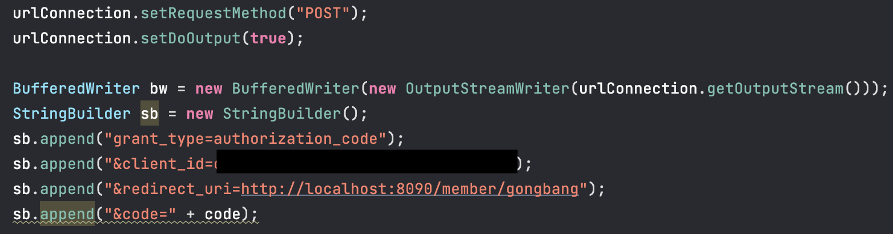URL 설정 및 HttpURLConnection 생성하여 카카오 인증 서버 URL과 연결을 설정한 후 요청 방법을 POST로 설정하고, 출력 스트림을 활성화했습니다. 필요한 매개변수를 StringBuilder에 추가 후 BufferedWriter를 사용하여 매개변수를 서버에 보낸 후 서버로부터 응답 코드를 받아 출력했습니다. JSONParser를 사용하여 응답 JSON을 파싱하고 access_token과 refresh_token을 받았습니다.
access_token은 사용자가 로그인 인증에 성공했을 시 부여되는 수명이 하루가 되지 않는 토큰이기 때문에 토큰을 갱신할 수 있는 refresh_token을 함께 추출했습니다.
[ 사용자 정보를 조회하고 데이터가 null인 경우 DB에 사용자 정보 데이터를 삽입하는 메서드 ]
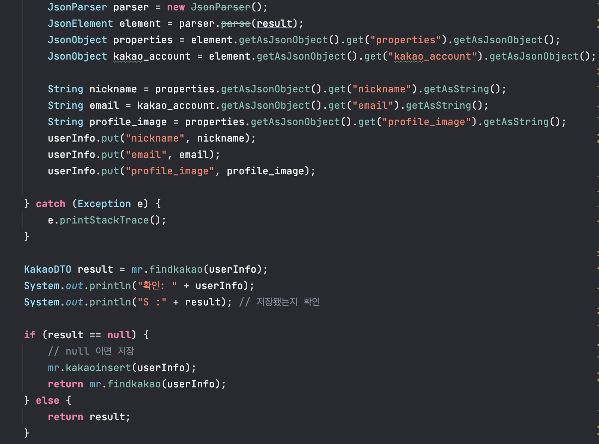JsonParser를 사용하여 응답 JSON 데이터를 파싱 한 후 JSON 데이터에서 닉네임, 이메일, 프로필 이미지를 추출하고, 사용자 정보를 데이터베이스에서 조회한 후 null일 경우 새로운 데이터를 삽입합니다.
[ Mybatis - DB에 사용자 데이터 저장 ]
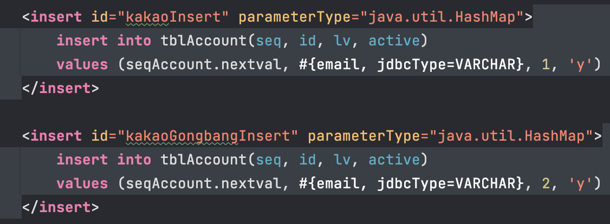일반 회원일 경우 lv1, 공방 회원일 경우 lv2로 구분하여 카카오 API에서 받은 사용자 데이터를 DB에 저장했습니다.

로그인 버튼을 눌렀을 때 DB에 유저 정보가 없는 경우 회원가입 후 이용해달라는 알림 창을 띄운 후 회원가입 페이지로 돌아가도록 구현했습니다.

회원가입 버튼을 눌렀을 때 DB에 이미 유저 정보가 있다면 이미 가입된 회원이라는 알림 창을 띄운 후 로그인 되도록 구현했습니다.

회원 탈퇴 버튼을 눌렀을 때 알림 창을 띄워 확인을 받은 후 회원 탈퇴가 진행되도록 구현했습니다.
회원가입 후 추가 정보 입력
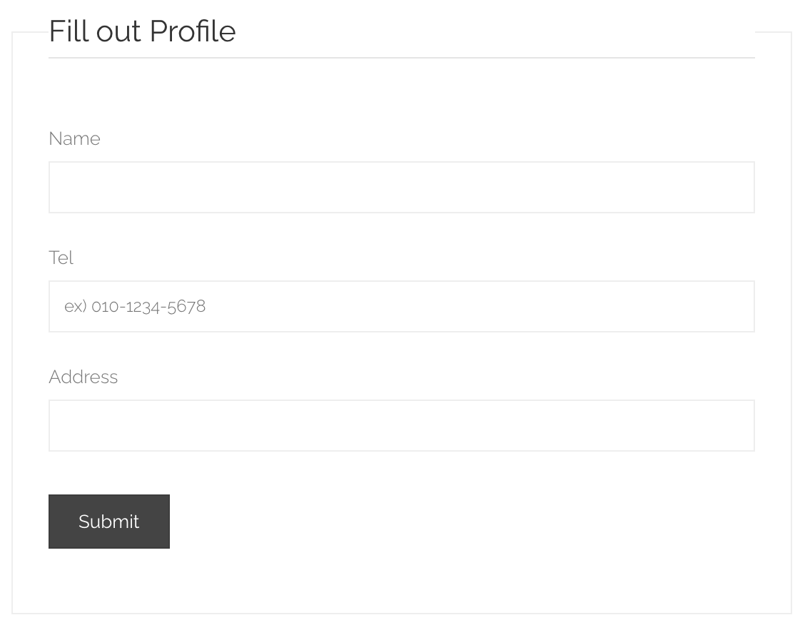카카오 로그인 API에서 권한 부족으로 이름과 전화번호를 받아올 수 없어서 회원가입 직후 다음 페이지로 이동하여 이름, 전화번호, 주소를 사용자가 직접 입력하고 Form 태그의 POST방식을 이용하여 입력한 데이터 값을 DB에 저장하도록 구현했습니다.
kakaoinfo.html
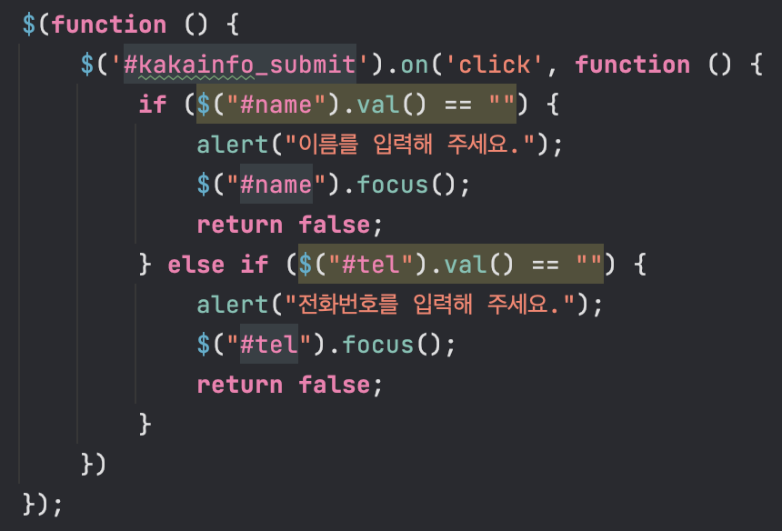jQuery를 사용하여 kakaoinfo_submit 아이디를 가진 submit 버튼이 클릭될 때 이름 또는 전화번호 필드가 비어있으면 사용자에게 비어있는 필드를 입력하라는 경고를 표시한 후 해당 필드에 포커스를 맞추도록 구현했습니다.
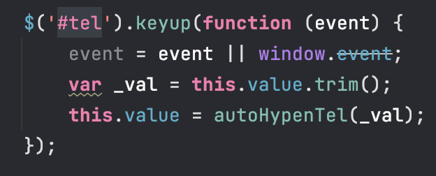 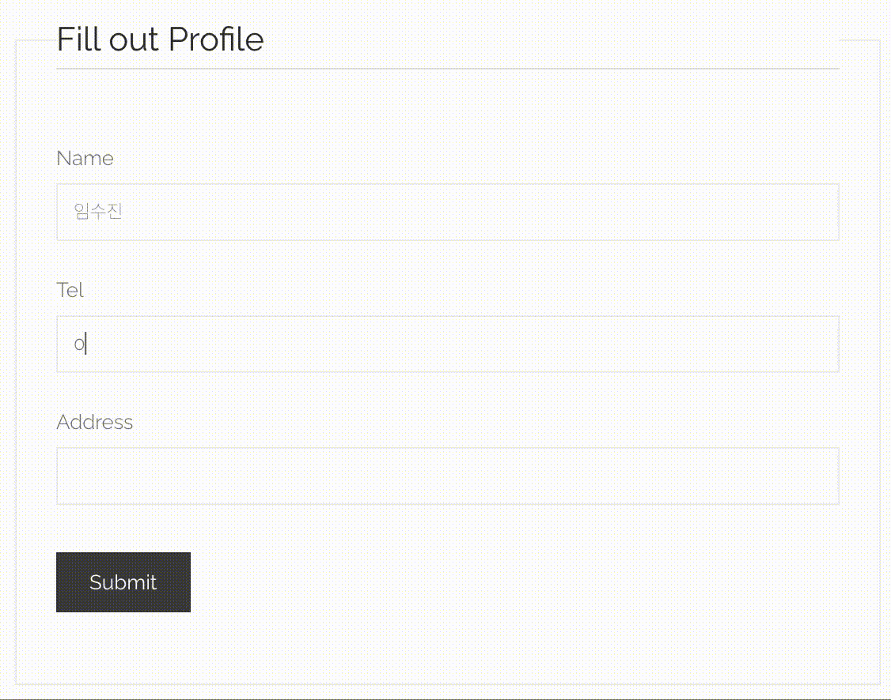
jQuery를 사용하여 사용자가 전화번호를 입력할 때 자동으로 양쪽 공백을 제거한 후 autoHypenTel 함수를 호출하여 자동으로 하이픈(-)을 추가하도록 했습니다.
[ 카카오 API 로그아웃 메서드 ]
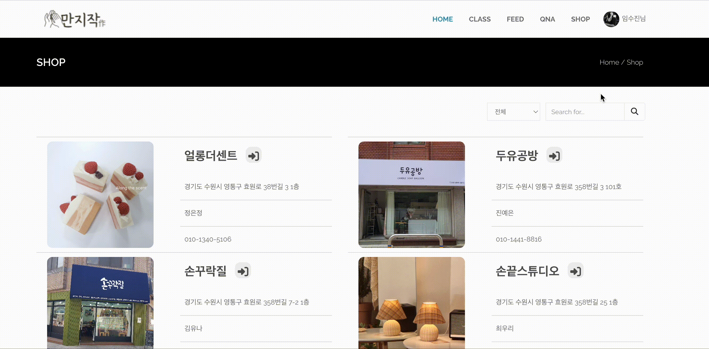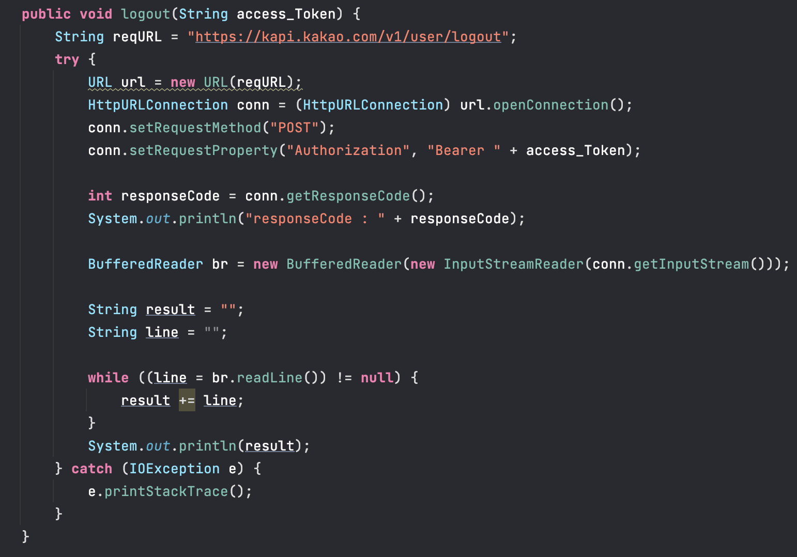
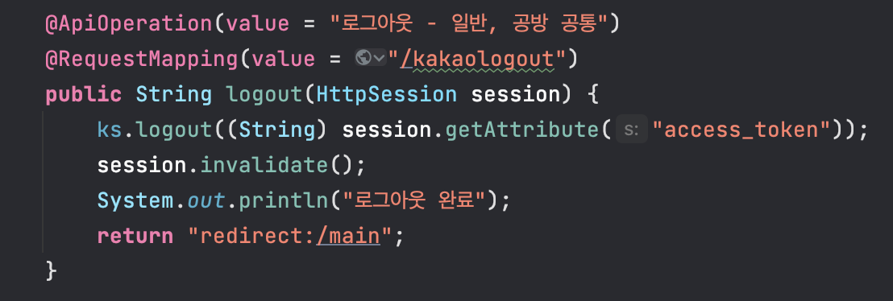
로그아웃 버튼을 눌렀을 때 access_token을 만료 처리하여 만료된 access_token을 사용하는 기기에서 로그아웃하고 메인 페이지로 돌아가도록 구현했습니다.
QnA 게시판
- 게시글 조회
Thymeleaf th:each 반복문을 사용해 DB에 저장되어있는 게시글 목록을 조회하고 작성일순으로 출력하도록 구현했습니다.
- 게시글 작성
입력된 값을 POST로 받아오고 글 작성자만 수정, 삭제가 가능하도록 session을 이용해 글쓴이의 ID 정보를 받아와서 ID 값과 입력값을 DB에 저장하도록 구현했습니다.

로그인한 사용자만 게시글 작성이 가능하도록 제약을 걸었습니다.
- 게시글 수정, 삭제
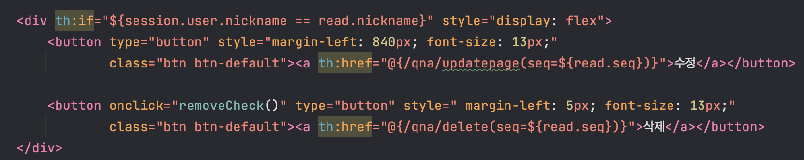
게시글 작성자만 수정, 삭제가 가능하도록 로그인한 사용자의 ID와 게시글 작성자의 ID가 일치할 때만 수정, 삭제 버튼이 활성화 되도록 구현했습니다.
수정을 완료한 경우 게시글 상세 페이지로 이동, 삭제를 완료한 경우 게시글 목록으로 이동하게 했습니다.
- 게시글 상세 조회 & 댓글 조회, 등록, 삭제
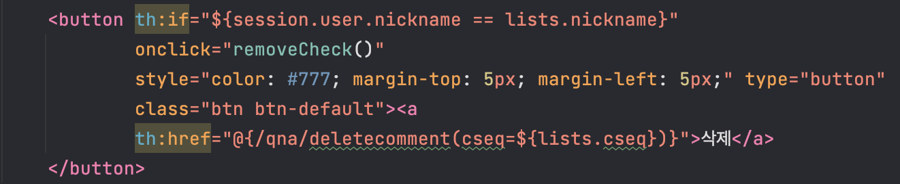
댓글 작성자만 삭제 할 수 있도록 로그인한 사용자의 ID와 댓글 작성자의 ID가 일치할 때만 삭제 버튼이 활성화 되도록 구현했습니다.
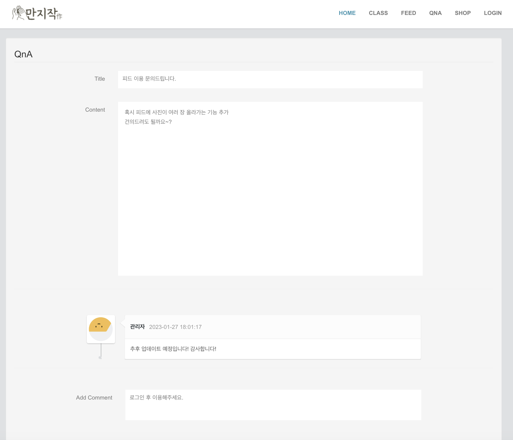
비회원의 경우 게시글과 댓글 조회는 가능하지만 댓글 작성이 불가하도록 댓글 작성란에 제약을 걸었습니다.
ERROR
타임리프: EL1007E: Property or field '' cannot be found on null
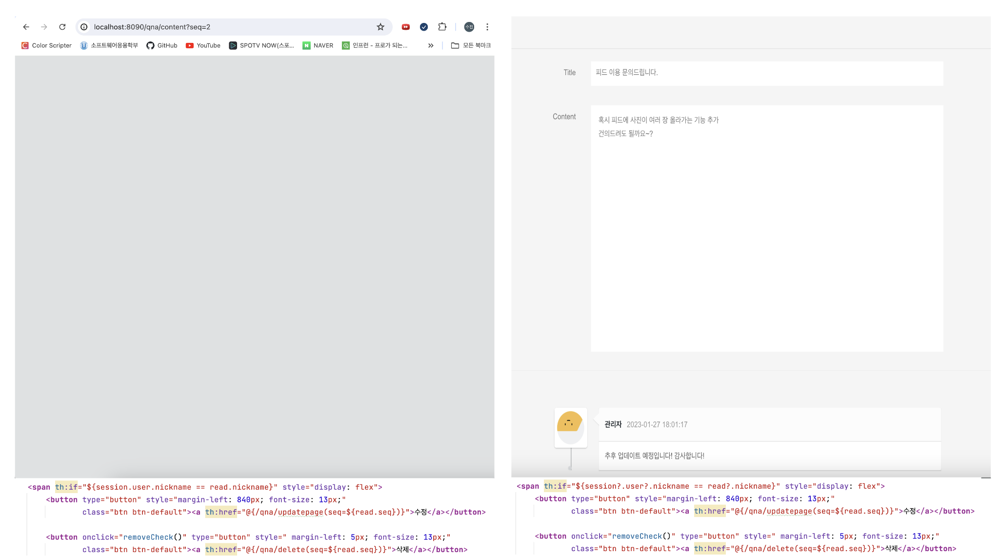로그인한 사용자의 nickname과 게시글을 작성한 사용자의 nickname이 일치할 때만 게시글 수정, 삭제 버튼이 보이도록 구현 했는데
비회원일 때 왼쪽 화면처럼 게시글 내용 자체가 조회가 되지 않는 오류가 생겼습니다.
이 오류는 로그인하지 않았을 때 session에 nickname이 null인 케이스에 발생한 문제이므로 오른쪽 코드와 같이 null이 아닐 경우에만 nickname을 참조하도록 수정했습니다.
만지작'作' 공예 멀티 플랫폼
단순 판매 커뮤니티가 아닌 공예품에 관심있는 모든 사람들의 커뮤니티로서 회원간 소통과 클래스 예약을 동시에 할 수 있는 멀티 플랫폼입니다.
- 개발인원: 4명
- Language: Java 11
- Framework: SpringBoot 2.7.7, Mybatis 2.3.0
- Database: Oracle
- Github: https://github.com/lsj104/boot-gongbang